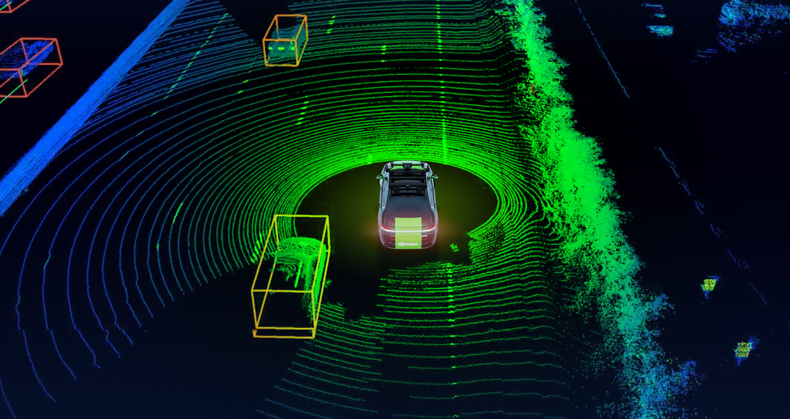

Hello, I'm Johnny Vang
Robotics projects focused on mobile robots, ROS2 validation, sensing, simulation, and practical system debugging.
- All
- Mobile Robots
- Sensor Fusion
- Hardware Testing
- ROS2
Projects
Sensor Fusion
- LiDAR
- Camera
- IMU
- Radar
Mobile Robots
- Nav2
- SLAM
- Gazebo
- Mapping
Embedded / Controls
- Raspberry Pi
- Arduino
- ros2_control
- PID Control
Validation
- Base Motion
- Sensors
- TF
- Localization
GitHub
Featured Project
TurtleBot3 sensor and odometry validation suite built in ROS 2 Jazzy.

TurtleBot3 Sensors Validation
A ROS 2 (Jazzy) validation suite built to verify odometry, IMU, and LiDAR behavior before running SLAM or Nav2.
Includes tests for message timing, odom drift and accuracy, IMU bias/noise, and LiDAR stability and obstacle detection.

Why This Project Matters
The package was built as a practical pre-SLAM and pre-Nav2 health check to verify stable topic timing, reasonable odom behavior, acceptable IMU characteristics, and usable LiDAR measurements before debugging higher-level autonomy. :contentReference[oaicite:2]{index=2}

{kind=link}